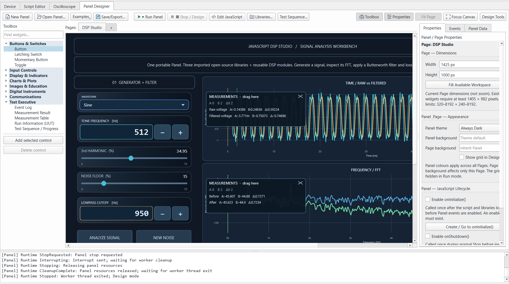

Chapter 2 — Panels, Pages and the design workflow

Start a Panel with New Panel, or open a bundled example. The left Toolbox groups widgets into control, display, chart, communication, education and test categories. The center canvas contains the Page; the right-hand pane shows Properties, Events and Panel Data.
Give each Page a name that describes the operator's task: Overview, Measurements, Diagnostics, Report. Page navigation is part of the application; it is not a separate browser route. You can create and resize Pages, customize their appearance, and choose a theme-following or fixed-dark presentation where supported.
Naming a good Panel
The Panel filename should identify the application, not just the equipment. For example, DC_Power_Qualification.wfpanel is more informative than Test1.wfpanel. Use visible captions for the operator and stable widget IDs for code. A button could display START TEST while retaining the code ID startTestButton.
When saving, remember that Save to Panel in the Test Sequence Editor only commits that editor's work to the in-memory Panel project. It does not replace the separate Save/Export step that writes the .wfpanel file to disk.
Choosing an example
The built-in examples are working projects, not slides. Getting Started demonstrates saved events; Panel Data Lab demonstrates shared typed values; JavaScript DSP Studio demonstrates charts and modules; Automated Test Station demonstrates the native test framework; and AC Network Laboratory and RC Step Response Laboratory show more elaborate analysis.
A fast way to understand a feature is to open the matching example in Design mode and compare three views: selected widget properties, the saved handler name, and the corresponding JavaScript function. You can then modify a small, isolated property and rerun.
What belongs in an operator application
Operators should see the state of the process, clear primary actions, and meaningful feedback. Avoid putting a full source listing on the operator Page. Separate infrequent setup and diagnostics from controls used in every run. Use numeric units, explicit statuses and a concise representation of failures, not a dense wall of text.